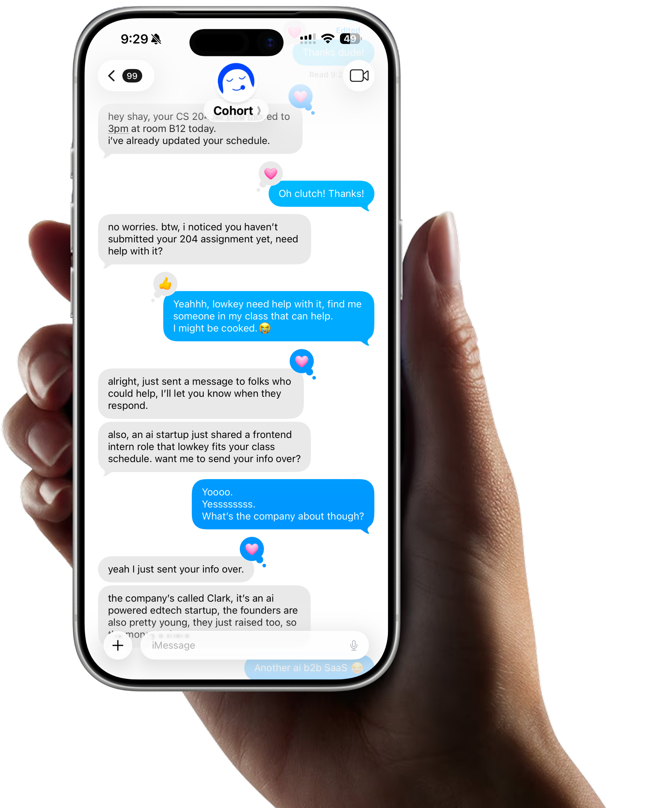
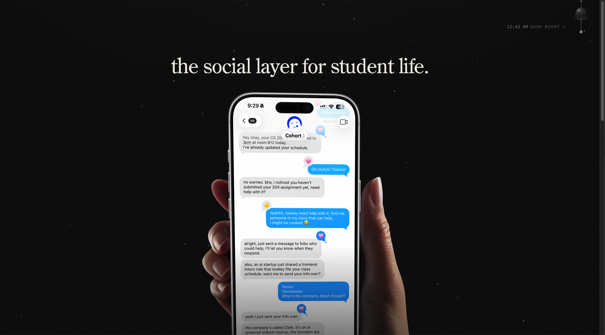
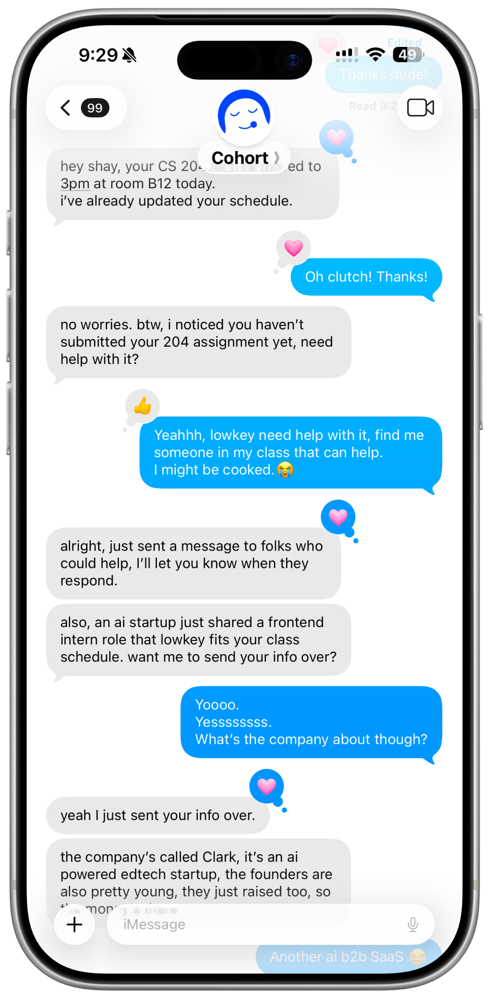

ElementThe assistantfromInteraction
Two scroll-driven pages — one for students, one for investors — around a proactive AI assistant that coordinates university life across a shared network.

Cohort needed two distinct sites that couldn't feel like different products. The customer page sells relief — a student drowning in six apps finally getting help. The investor page sells momentum — a network that compounds with every new campus.
The same design tokens, particle system, and pill interaction pattern serve both. The difference is voice: lowercase-confident for students, sentence-case precise for investors. The animation philosophy is identical — things arrive, they don't pop.
The only way in is to be handed the URL.
Elements

Element
ElementDefine the two emotional gradients
Customer page: dark problem → electric blue solution → dark CTA. Investor page: mounting momentum toward a single ask. Colour transitions are events, not background swaps.
Build the pill system
Tappable phrases that expand inline — no modal, no new page. Stats, quotes, app stacks, and traction data all live inside pills. The reader stays in the flow.
Chapter the investor narrative
Broke the thesis into escalating beats — problem, product, network moat, business model, traction, team, ask. Each beat owns its own viewport.
Close on restraint
The investor page ends on white space and two email addresses. No CTA button. The absence of friction is the message.
Colour Palette
This project uses a colour palette of 3 colours